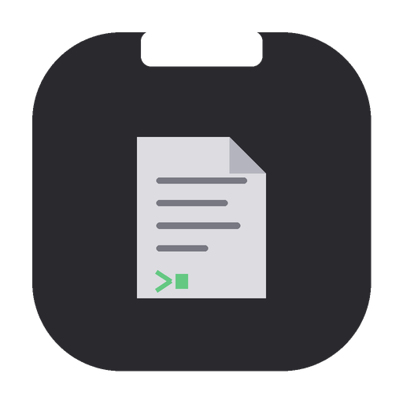

A native macOS editor that lives in your MacBook's notch. Split panes, built-in terminal, auto-save. Everything stays local.

Download for macOS↑ try it — hover the notch above
Move your cursor to the notch, press Enter. A new note window appears instantly, focused and ready.
Split vertically or horizontally, iTerm2-style. Nest splits, navigate with keyboard shortcuts, drag dividers to resize.
⌘D ⌘⇧DFull shell right next to your notes. xterm-256color, your environment, your shell. Open a terminal pane anywhere.
⌘T ⌘⇧TDrag a window onto another to merge them. Directional drop zones highlight where the pane will land.
Notes save as you type. Smart filenames from your first line. Choose markdown or plain text.